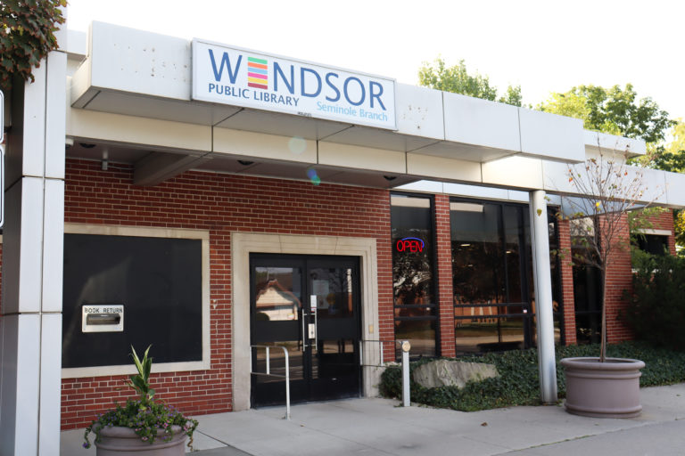

Address
4285 Seminole St, Windsor, Ontario N8Y 1Z5

Image Source: Windsor Public Library (Public Domain)
About Seminole Library
The Seminole Library Branch is a cornerstone of the Windsor Public Library system, serving the city’s east side community with a warm, family-friendly atmosphere. Located conveniently along Seminole Street, this branch offers a rich selection of books, audiobooks, and digital media for readers of all ages.
In addition to traditional library services, Seminole Library provides free computer and Wi-Fi access, children’s story times, and community workshops focused on technology and literacy. Its cozy reading areas and knowledgeable staff make it a welcoming space for studying, working, or simply relaxing with a good book.
The library’s involvement in local events, such as book drives and cultural programs, reflects Windsor’s commitment to lifelong learning and community engagement. Whether for leisure or education, Seminole Library continues to connect residents with resources that inspire creativity and growth.